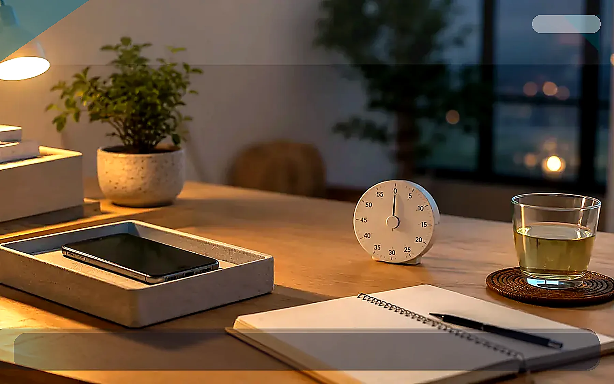

퇴근 후 30분 집중 루틴 실사용 리뷰

TrendFlow Guide본업이 끝난 뒤에는 의지보다 환경이 더 중요합니다. 이 글은 퇴근 후 30분만이라도 쇼츠, 글쓰기, 공부, 정리를 시작할 수 있게 만드는 현실적인 루틴을 실사용 관점으로 정리합니다.
이 글은 단순 추천이 아니라, 왜 이 주제가 요즘 관심을 받는지와 실제 사용 관점에서 무엇을 먼저 바꾸면 좋은지 정리한 글입니다.
이런 상황이라면 이렇게 시작하세요
의지가 약해서가 아니라 스마트폰, 알림, 피로가 계속 시작 신호를 방해하고 있을 수 있어요.
퇴근 후에는 에너지가 많이 떨어져 있습니다. 참는 방식보다 환경을 먼저 바꾸는 편이 오래갑니다.
스마트폰을 시야 밖에 두고, 조명 하나를 켜고, 25~30분 타이머를 맞추는 것부터 시작하세요.
오늘은 30분만 정하고, 가장 방해되는 요소 하나를 치워보세요.
- 지금 가장 불편한 문제와 직접 연결되는지 확인
- 매일 반복해서 사용할 가능성이 높은지 확인
- 이미 가진 것과 조합해서 바로 실행 가능한지 확인
왜 지금 이 주제가 뜨는가
- 부업과 자기계발 수요가 늘면서 “퇴근 후 1시간”을 어떻게 쓰는지가 중요한 주제가 되었습니다.
- 정보 과부하와 피로 누적으로 인해 긴 루틴보다 짧고 실행 가능한 루틴 선호가 커졌습니다.
- 디지털 웰빙 관점에서도 퇴근 직후 스마트폰 사용을 줄이는 흐름이 커지고 있습니다.
실사용 관점 리뷰
실제로는 완벽한 2시간 집중보다 퇴근 후 첫 30분을 지키는 것이 훨씬 효과적입니다. 앉자마자 타이머를 맞추고, 물 한 잔과 메모장만 두고 시작하면 진입장벽이 낮아집니다.
반대로 실패하는 패턴은 “조금 쉬고 시작해야지” 하며 소파에 눕는 경우입니다. 이 경우 스마트폰과 영상 소비로 이어지기 쉬워서, 귀가 후 동선을 바꾸는 것이 중요합니다.
비교해서 보면 좋은 포인트
| 구분 | 우선 확인할 점 | 추천 방향 |
|---|---|---|
| 시작 신호 | 책상 조명·타이머가 있는가 | 귀가 후 바로 켜는 신호 만들기 |
| 스마트폰 위치 | 시야 안에 있는가 | 트레이나 서랍에 두기 |
| 작업 분량 | 지나치게 큰 목표인가 | 30분 안에 끝낼 1개만 선택 |
사지 않아도 되는 경우
- 퇴근 직후 바로 쉬어야 몸이 회복되는 날
- 집중보다 수면이 더 급한 상태일 때
- 작업 목표가 너무 커서 30분 안에 시작 자체가 안 되는 경우
쇼츠 연결 아이디어
- “퇴근 후 30분만 지켰더니 달라진 것” 정리 영상
- 책상 조명 ON과 스마트폰 분리 장면을 보여주는 루틴 영상
- 퇴근 후 실패 패턴 vs 성공 패턴 비교 영상
관련 글 연결
바로 사기 전에 이 기준부터 확인하세요
추천 대상
퇴근 후 집중이나 수면 전 루틴이 자꾸 무너지는 사람
먼저 볼 항목
타이머나 스마트폰 분리 도구
사지 않아도 되는 경우
이미 스마트폰을 멀리 두고도 집중이 잘 된다면 새 물건을 살 필요는 없습니다.
먼저 해볼 것
기존 시계, 메모장, 조명 위치부터 바꿔보세요.
이 페이지는 제휴 링크를 포함할 수 있으며, 실제 구매 전에는 본인의 공간·예산·사용 빈도를 먼저 확인하는 것을 권장합니다.
지금 해볼 것 선택
바로 구매를 유도하기보다, 내 상황에 맞는 글을 더 읽고 필요한 항목만 비교하는 흐름을 추천합니다.
오늘은 30분만 바꿔보세요
스마트폰 위치, 알림, 조명 중 하나만 바꾸고 바로 체감해보세요.